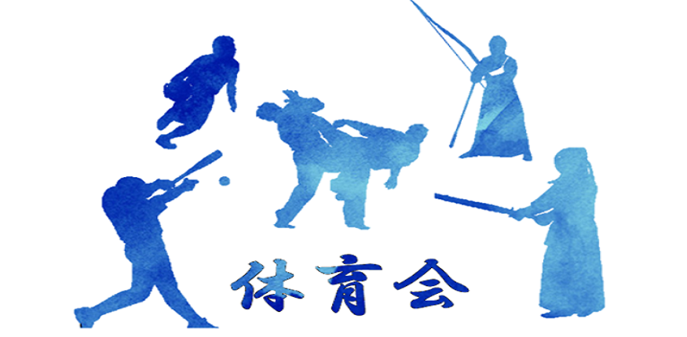
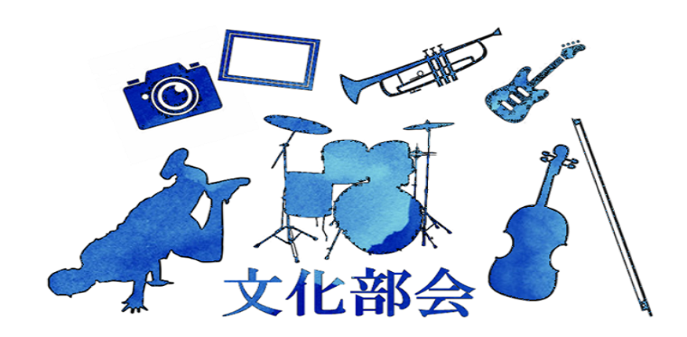

執行委員会
お知らせ
執行委員会の紹介
各局の紹介
お問い合わせ
クラブ紹介
委員会
体育会
文化部会
学術研究部会
オリエンテーション
会計監査
要望書
資料配布
Q＆A
クラブインフォメーション
お知らせ
2019-01-01
更新情報
2019-01-01
更新情報
2019-01-01
更新情報
学生団体の紹介
3部会・部会所属団体
学術研究部会
体育会
文化部会
4委員会
旭祭実行委員会
新聞委員会
※体育祭実行委員会
放送委員会

体育会本部
体育会本部
体育会所属団体
合気道部
空手道部
弓道部
※剣道部
※硬式庭球部
硬式野球部
※ゴルフ部
サイクリング部
※蹴球部
少林寺拳法部
自動車部
※柔道部
※準硬式野球部
※水泳部
※スキー部
ソフトテニス部
卓球部
※排球部
バドミントン部
※フィギュアスケート同好会
※洋弓部
ラグビー部
陸上競技部
※籠球部
※ワンダーフォーゲル部
※印のついた団体はホームページを運営していません。

文化部会本部
文化部会本部
文化部会所属団体
DJ部
※アミューズメント研究会
※板物同好会
演劇部
※お笑い同好会
管弦楽部
※競技かるた部
※競技麻雀部
ギターアンサンブル部
グリークラブ
※サバイバルゲーム部
写真部
将棋部
吹奏楽部
※ダンス部
※釣友会
ﾌｫｰｸﾐｭｰｼﾞｯｸｱｿｼｴｰｼｮﾝ
舞踏研究会
※ボランティアサークルらいふ
※マジックサークル
※漫画研究会
メディア研究会
※モダンジャズ研究会
※留学生会
学術研究部会
学術研究部会本部
学術研究部会部会所属団体
※VOCALOID同好会
アマチュア無線部
※エネルギー研究部
オーディオ技術研究部
※航空技術研究部（休部中）
自動制御研究部
ソフトウェア研究部
鉄道研究部
※天文学研究部
電子技術研究部